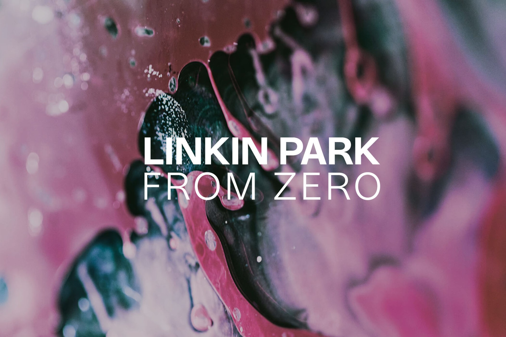

Discos
HIbrid Theory (2000)
Hybrid Theory, en español: "Teoría Híbrida", es el álbum debut de la banda estadounidense Linkin Park, publicado por la compañía discográfica Warner Bros. Records el 24 de octubre de 2000. El trabajo fue un éxito comercial: es el álbum de rock del siglo XXI con mayor cantidad de ventas y el segundo álbum debut más vendido de la historia después de Appetite for Destruction (1987) de Guns N' Roses. Además, alcanzó el segundo puesto en la lista Billboard 200, así como otras posiciones altas en otras listas del mundo. Grabado en los NRG Recording Studios en North Hollywood (California) y producido por Don Gilmore, sus letras se relacionan con los problemas que el cantante Chester Bennington experimentó durante su adolescencia, tales como el abuso de sustancias o el maltrato. Hybrid Theory debe su título al nombre anterior del grupo y, según la crítica, hace referencia a la mezcla «híbrida» de heavy metal y rap que caracteriza a su sonido.
En agosto de 2020, se anunció la publicación de una reedición de Hybrid Theory con motivo de la celebración de su vigésimo aniversario. Al mismo tiempo, la banda publicó una canción inédita, "She Couldn't", como sencillo. La reedición se lanzó el 9 de octubre y consiste en una recopilación que incluye el álbum original, el álbum de remezclas "Reanimation", el EP Hybrid Theory y otros temas en vivo, maquetas y remezclas de los comienzos del grupo.
Meteora (2003)

Es el segundo álbum del grupo Linkin Park, lanzado el 25 de marzo de 2003. El álbum ha vendido 13.300.000 de copias en todo el mundo, 6 millones solo en los EE.UU. Solo en su primera semana vendió un estimado de 810.000 copias.
Meteora es un disco cargado de una estética plenamente callejera, con grandes influencias del grafiti y con el estilo único que les caracteriza. El nombre del mismo estuvo inspirado en la región rocosa de Meteora en Grecia, donde están construidos numerosos monasterios encima de las piedras.
Este disco se diferenció por ser más melódico en general, alternando también con pequeñas influencias del rock/metal industrial y por la incorporación de nuevos instrumentos, como el uso de un shakuhachi (una flauta japonesa hecha de bambú) como se puede escuchar en la canción "Nobody's Listening", y demás efectos de sonido.
En febrero de 2023, se anunció que la banda lanzaría una edición del vigésimo aniversario de Meteora el 7 de abril de 2023. Junto a esto, lanzaron una demostración nunca antes lanzada titulada "Lost" como el sencillo principal de la reedición
Minutes to Midnight (2007)
Minutes to Midnight, en español: "Minutos para Media Noche", es el tercer álbum de estudio de la banda de rock estadounidense Linkin Park, lanzado el 14 de mayo de 2007 a través de Warner Bros. Records. El álbum fue producido por Mike Shinoda y Rick Rubin, y es el primer álbum de estudio de Linkin Park producido sin Don Gilmore, quien había producido los dos álbumes anteriores de la banda. Minutes to Midnight es el álbum de seguimiento de la banda de Meteora (2003) y presenta un cambio en la dirección musical del grupo. Para la banda, el álbum marcó el comienzo de una desviación de su característico sonido nu metal. Minutes to Midnight toma su título del símbolo del Reloj del Juicio Final. También es el primer álbum de larga duración de la banda en llevar la etiqueta Parental Advisory.
A Thousand Suns (2010)
A Thousand Suns, en español: "Mil Soles", es el cuarto álbum de estudio de la banda estadounidense Linkin Park, lanzado el 14 de septiembre de 2010 bajo el sello discográfico de Warner Bros. Records. La composición del álbum fue llevada a cabo por la banda, mientras que su producción estuvo a cargo del vocalista Mike Shinoda y de Rick Rubin, con quien el grupo había trabajado en su álbum de estudio anterior, Minutes to Midnight (2007). Las sesiones de grabación tuvieron lugar en los NRG Recording Studios en North Hollywood (Los Ángeles, California) desde 2008 hasta principios de 2010.
A Thousand Suns es un álbum conceptual que trata principalmente sobre el miedo a una guerra nuclear. La banda reconoció que, debido a la experimentación con sonidos nuevos y distintos, fue un cambio radical con respecto a sus trabajos anteriores. Shinoda afirmó en una entrevista de MTV que en su obra hacen referencia a numerosos problemas sociales como la «mezcla de ideas humanas con la tecnología» y los "temores [del hombre], el miedo de lo que va a ocurrir en el mundo". El título del álbum proviene de una cita del texto sagrado hinduista Bhagavad Gītā, recordada por Robert Oppenheimer tras la creación de la bomba atómica: "Si cientos de miles de soles aparecieran en el cielo al mismo tiempo, su brillo podría semejarse al de la refulgencia de la Persona Suprema en esa forma universal"
Living Things (2012)
Living Things, en español: "Cosas vivientes", es el quinto álbum de estudio de la banda estadounidense de Rock Linkin Park. El álbum fue lanzado el 26 de junio de 2012 por el sello discográfico Warner Bros. Records. La producción estuvo a cargo del vocalista Mike Shinoda y Rick Rubin, quien coprodujo los dos álbumes anteriores de la banda, Minutes to Midnight y A Thousand Suns. Antes del lanzamiento del álbum, la banda declaró que el nuevo material contaría con una nueva dirección en su música, combinando los elementos rap rock de su álbum debut, Hybrid Theory, y las mezclas electrónicas de A Thousand Suns, manteniendo al mismo tiempo un sonido original. Este es el cuarto álbum de Linkin Park en debutar en la posición número uno en los Estados Unidos. Los otros tres grupos a llevar a cabo esta hazaña son la banda de metal Metallica, Dave Matthews Band y Disturbed.
Tha Hunting Party (2014)

The Hunting Party, en español: "La partida de caza", es el sexto álbum de estudio de la banda estadounidense de rock Linkin Park. Producido por los miembros de la banda Mike Shinoda y Brad Delson, se publicó mediante Warner Bros. Records el 13 de junio de 2014 en Alemania, Austria y Suiza, y el 17 de junio en América del Norte. Es su primer trabajo discográfico no grabado en NRG Recording Studios y el primero desde Minutes to Midnight que no es producido por Rick Rubin.
The Hunting Party es solo una aproximación básica al sonido de la banda en sus primeros discos, Hybrid Theory y Meteora, dejando completamente de lado el rock electrónico que caracterizó a sus dos trabajos más recientes, dirigiendo su nuevo álbum hacia un rock más puro. Descrito por Mike Shinoda simplemente como «un disco de rock», sirve como una declaración en contra de grupos contemporáneos de rock mainstream y comercial a los que Shinoda acusó de «intentar ser como otras bandas y evitar riesgos». El álbum tomó un año de grabación y producción, con el material siendo escrito de manera improvisada en el estudio por los miembros de la banda. Además, cuenta con la colaboración de cuatro artistas: Page Hamilton, Rakim, Daron Malakian y Tom Morello, lo que lo convierte en el primer álbum de estudio de Linkin Park con músicos invitados. Este es el penúltimo álbum de Chester Bennington como parte de Linkin Park, fallecido el 20 de julio de 2017.
One More Light (2017)
One More Light, en español: "Una luz más", es el séptimo álbum de estudio de la banda estadounidense de rock Linkin Park. Se publicó el 19 de mayo de 2017 a través de Warner Bros. Records y Machine Shop Records, siguiendo a su publicación de 2014, The Hunting Party. Es el primer álbum con un tema que le da su nombre y la banda lo eligió al considerar que representa el corazón del disco. El primer sencillo, "Heavy", fue publicado el 16 de febrero.
One More Light es el último álbum de la banda con Chester Bennington como vocalista principal antes de que falleciera el 20 de julio de 2017, también es el último album con Rob Bourdon como baterista.
El álbum presenta a Pusha T, Stormzy y Kiiara como cantantes invitados, y el proceso de producción y composición contó con las colaboraciones de Julia Michaels, Ilsey Juber,Justin Tranter, Ross Golan, Andrew Goldstein, blackbear y Eg White.
From Zero (2024)

From Zero, en español: "Desde cero", es el próximo octavo álbum de estudio de la banda Linkin Park, será lanzado el 15 de noviembre de 2024 a través de Warner Records y Machine Shop. Será el primer álbum de estudio de Linkin Park desde One More Light (2017), y el primero en el que participarán la nueva cantante Emily Armstrong de "Dead Sara", así como el nuevo baterista de la banda, Colin Brittain. Es el primer álbum de la banda en el que no cuentan con el vocalista Chester Bennington debido a su muerte en 2017, así como el baterista y miembro fundador Rob Bourdon debido a su renuncia a la banda.